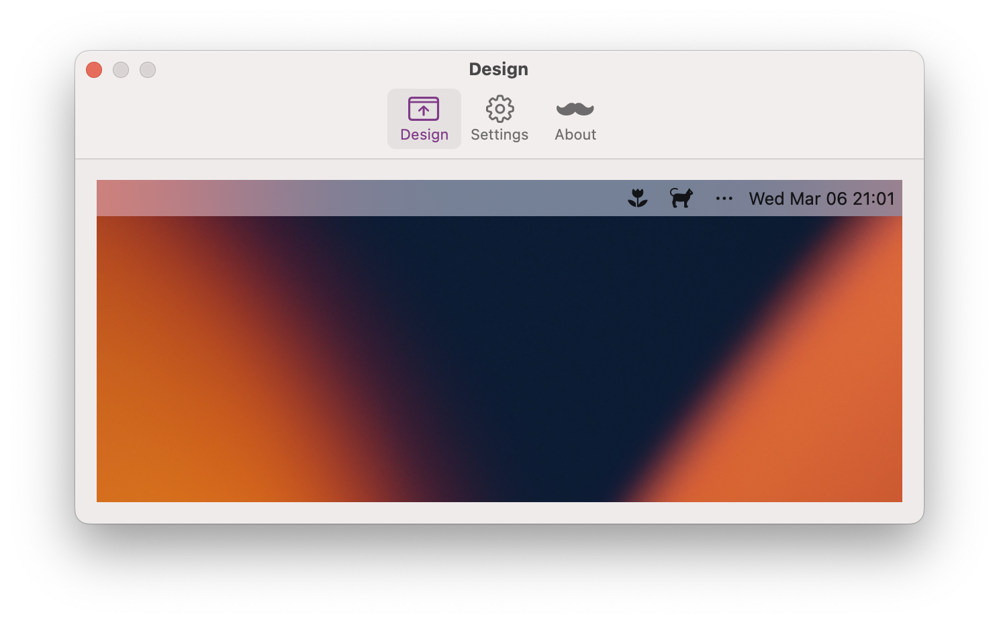

Barber is a macOS menu bar application that lets you create menu bar icons on the fly. You can display an icon or text in the menu bar, assign an action to it, either trigger a link or open a menu.
FAQ
How do I add bar items in Barber?
In the design window, click on the empty space of the menu bar, a popover will appear asking for information needed for a bar item. By
How do I add icons for a bar item?
By clicking the smiling icon on the right of the first text field, you can choose a suitable icon for your bar item. Icon will appear as text such as “[flower]” in the text field, don’t worrry, it will display well in the menu bar.
What action can I assign to the bar item?
You can choose “Open App” or “URL scheme” for the bar item. * Open app: Click on the “Choose App” button, and select an application you want to open when the bar item is clicked. * URL Scheme: You can attach a link to the bar item.
How do I add menu items for a bar item?
In the design window, click the bar item you just created. Select “Add menu under”, a smiliar popover will appear, asking for the text and action for the menu item.
After that, when you click the bar item again, the menu item you just created will show up. By clicking on the menu item, you can modify or remove it.
Can I hide the Barber icon in menu bar?
When Barber launches, it will add an icon in the menu bar. You can access the design window, or choose to quit the app from the icon menu. If you’d like to hide the Barber icon, in the settings window, uncheck “Show Barber icon in the menu bar”.
To quit the app without the icon, simply launch Barber from the Applications (e.g. Launchpad or Finder), and press Command + Q.
Support
Please check the FAQ section first to see if your question has already been answered. Alternatively, you can send an email to support@daix.me for personalized help.